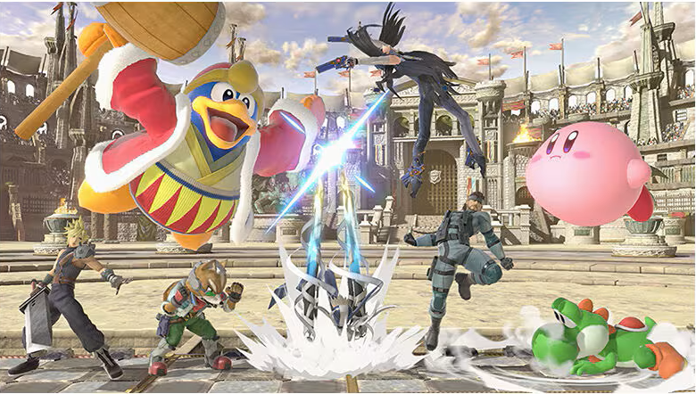

Everybody loves a good crossover, whether it's Marvek Vs Capcom or Fortnite the bigger the better. Ultimate takes that desire personally as a challenge to put together one of gaming's biggest crossover Fighting Game's and still manages to come out not only high quality, but extremely approachable. Even if you don't normally play Fighting Games-or even video games at all for that matter there will be something here for you to like. Between 89 characters, 103 stages, a few dozen items, and over 1000 spirit collectibles, it'll a while before you've feel like you've seen everything.
Unlike a lot of other traditional Fighting Games this game doesn't feature long inputs, just two attack buttons and your joy stick. It also doesn't feature health, instead losing a life is based on if you're sent flying past a certain zone, with it being easier to do so the more hits you've taken. This avoid that feeling of certain doom traditional Fighting Games have when you're hit at low health. It also just doesn't have a lot of combos, advanced tech, or isn't really too fast, making it perfect for beginners.
Smash suppots a lot of ways to play, be it having a Smashing good time with up to 7 other players, mixing it up with up to several dozen items, several rulesets-including health like a traditional Fighter, etc. But there's options for those who want to play competitively too, such as Omega (the flat stage) or just turning the items off.
This is all well and good if you have plenty of friends to play with, but what if you don't? The game has a few modes to play as a quick distraction, like a 1 vs 100 mode, but besides that, there's not much to do. There is a 24 hour story mode... but there's little to no story to speak of here, and it's pretty much just nonstop gimmick fights with the occasional puzzle that can be done in 2 minutes to break it up.
You could try to go online to find matches, but that raises it's own problems. It's incredibly laggy for starters, to the point where it's an entirely different game (expect to see nonstop campers, like Samus). But also because of how it handles rulesets, you can make your own, but so can your opponent. So expect to see either a lot of competitive rulesets or a lot of bad rulesets from people desperate to move up the ranked ladder (Which there's no way to turn off, the ranked and unranked modes are blursed into one).
I consider this to be a game of extremes, it's a pretty flawed time on your own, but nonstop fun with friends in person. However, whether you're looking for a "celebration of gaming" or a fun game to play with friends, I'd still recommend this game. There will be something here for you somewhere, if you're willing to take a few roadbumps here and there.